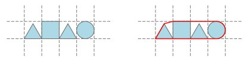

BZPRO
#4789. [CERC2016]Convex Contour
内存限制：512 MiB
时间限制：10 Sec
提交
提交记录
讨论
题目描述
一些几何图形整齐地在一个网格图上从左往右排成一列。它们占据了连续的一段横行
每个位置恰好一个几何图形。每个图形是以下的三种之一：
1.一个恰好充满单个格子的正方形。
2.一个内切于单个格子的圆。
3.一个底边与格子重合的等边三角形。

已知每个格子的边长都为1，请求出这些几何图形的凸包的周长。
输入格式
第一行包含一个正整数n(1<=n<=20)，表示几何图形的个数。
第二行包含n个字符，从左往右依次表示每个图形，“S”表示正方形，“C”表示圆形，“T”表示等边三角形。
输出格式
输出一行一个实数，即凸包的周长。与答案的绝对或相对误差不超过10^-6时被认为是正确的。
样例
样例输入
4
TSTC
样例输出
9.088434417
数据范围与提示